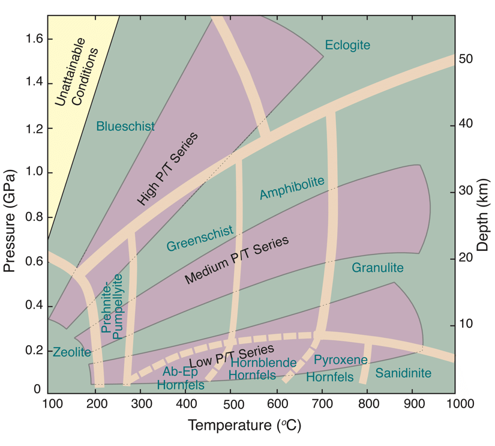
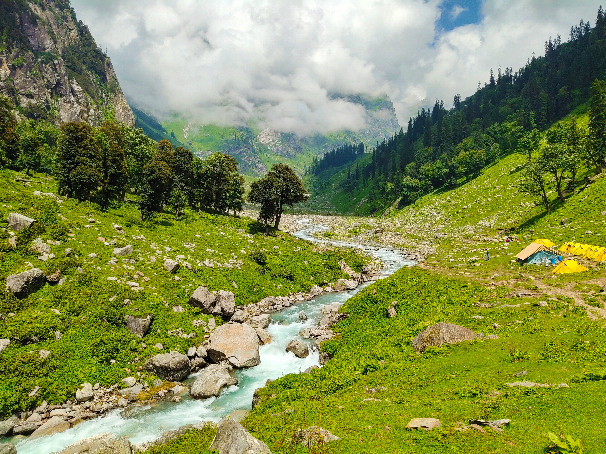

When Continents Collide
The Himalayas are the highest and one of the youngest major mountain ranges on Earth. Extending approximately 2,400 kilometres across Asia, they form a natural barrier between the Tibetan Plateau and the Indo-Gangetic Plain. The mountain system spans Pakistan, India, Nepal, Bhutan, and China (Tibet), and contains all fourteen of the world's mountains exceeding 8,000 metres in elevation, including Mount Everest (8,849 m), the highest point on Earth.

Geological History
A Forgotten Ocean
Around 250–200 million years ago (Ma), during the late Palaeozoic, the supercontinent ‘Pangaea’ began to split. This created two major continental masses: Laurasia in the north and Gondwana in the south. Separating them was the Tethys Ocean, a warm tropical sea that accumulated, sorted and redistributed vast quantities of marine sediments over tens of millions of years. These sediments would later become many of the sedimentary rocks now exposed high within the Himalayas.
Marine fossils - including ammonites, trilobites, brachiopods, and limestone formed from ancient coral reefs - can still be found near the summit regions of several Himalayan peaks, providing concrete evidence that these rocks once lay beneath the ocean.

Indian Plate Migration
Approximately 130–120 million years ago, the Indian Plate separated from the continent Gondwana. Unlike most tectonic plates, the Indian Plate moved northwards at extraordinary speeds of up to 18–20 centimetres per year, making it one of the fastest- moving continental plates in history. Forces driving this rapid motion include slab pull from subducting oceanic lithosphere of the Indian plate, ridge push from the Indian Ocean spreading centres and the relatively small size of the Indian Plate. In 70 million years, the Indian landmass travelled more than 6,000 kilometres across the closing Tethys Ocean (that’s further than going from London to New York!).
Continental Collision
Around 55–50 million years ago, the oceanic crust of the Tethys Ocean had been almost completely subducted beneath Eurasia, resulting in the inevitable collision of the buoyant continental crust of India into the giant Eurasian plate. Unlike oceanic crust, continental crust is way too buoyant to subduct.
Instead of subduction, rocks were compressed, the accreting crust thickened, layers of sediments folded, faults and fractures developed, high-grade (eclogite-facies) metamorphism occurred and towering mountains rose. This ongoing event is known as the Himalayan Orogeny.
Structure of the Himalayas
The Himalayas are composed of several parallel geological belts separated by major thrust faults.
• Sub-Himalaya (Siwalik Hills) - The youngest rocks and sediment deposits which mainly consists of sandstones, mudstones and conglomerates. These units are deposited in alluvial fan systems by the erosion and redistribution of sediments deriving from the Himalayas.
• Lesser Himalaya - Composed mainly of metamorphic rocks from intermediate grades. Primarily consists of quartzites, phyllite, slates and schists. These rocks experienced moderate metamorphism during collision.
• Greater Himalaya - Contains some of the highest grade of metamorphic rocks in the world, including paragneisses, amphibolites, granulites and migmatites, as well as UHP (ultra-high-pressure) metamorphic units, such as coesite-bearing eclogites. Many peaks over 7,000 metres are located within this zone which has the fastest uplift rates in the world.
• Tethyan Himalaya -This group contains limestone, shales, sandstones and other fossil-bearing marine sediments. These rocks preserve evidence of the closure and exhumation of ancient Tethys Ocean crust.
• Indus–Tsangpo Suture Zone - This suture marks the actual collision boundary between the Indian and Eurasian tectonic plates. It contains ophiolites, other oceanic crust fragments, volcanic rocks and deep marine sediments. Ophiolites are particularly important here as they represent pieces of once ocean floor, thrust onto land.
Major Fault Systems
Several enormous thrust faults accommodate compression.
• The Main Frontal Thrust (MFT) is the youngest active fault located on the southern edge of Himalayas; it is responsible for many damaging earthquakes.
• The Main Boundary Thrust (MBT) separates the Lesser Himalaya from the Siwalik Hills.
• Finally, the Main Central Thrust (MCT) separates the Greater Himalaya region from the Lesser Himalaya.
These thrust systems are responsible for most of the mountain range’s uplift.
Metamorphism
High pressure, regional metamorphism has recrystallised huge portions of the Himalayan rocks to the highest degree (Eclogite / Granulite facies). Radiogenic heating as well as a thickened, insulated continental crust means temperatures reached over 700°C in some areas, while the pressures generated from two colliding continents exceeded 25 kilobars. This led to the formation of UHP/UHT minerals such as garnet, kyanite, sillimanite, staurolite. These rare minerals allow geologists to reconstruct the exact regional pressure–temperature history of the mountain belt.
The northwestern Himalayas demonstrate the highest grade of metamorphism, specifically within the Tso Morari / Kaghan Valley where eclogites bearing the index mineral coesite can be found. This confirms ultra-high-pressure conditions from deep continental subduction during the orogeny before being pushed back up to the surface.


Geohazards
Because the Indian Plate continues to move northward, pent-up stress accumulates along major faults, storing elastic energy within the rock. Eventually, the fault line snaps loose, releasing centuries worth of stored strain in a matter of seconds. This violent release radiates seismic energy throughout the earth in the form of an earthquake.
The largest recorded earthquake exhibited in the Himalayan region was the 1950 Assam-Tibet earthquake, which resulted in approximately 4,800 deaths. The magnitude 8.7 earthquake was caused by the rupture of the previously mentioned Main Frontal Thrust (MFT). Today, scientists estimate that sections of the Main Himalayan Thrust remain "locked," storing strain that could produce future great earthquakes (magnitude 8 or greater).
Due to the rapid plate movement speeds, stress accommodation means earthquakes are commonly exhibited in the Himalaya region. This results in major erosional processes such as landslides, rock falls and debris flows. Monsoonal climate systems accelerate and exaggerate the risk posed by these geohazards due to saturation of slopes, possibly triggering these gravity-derived flows.
The Himalayas also act as a vast physical barrier to atmospheric air circulation, helping drive the Asian monsoon by forcing warm, moist air upwards and over the mountains. This produces intense seasonal (monsoonal) rainfall across the range, which feeds into major river systems including the Ganges, Indus, Yangtze and Mekong.
This means the same mountain system that provides water for nearly two billion people also creates major geohazards, including flash floods and debris flows that threaten communities throughout the Himalayan river valleys and downstream river deltas.
“And it is only for a moment that he can dwell there. For men cannot always live on the heights. They must come down to the plains again and engage in the practical life of the world.” — Francis Younghusband, Mount Everest: The Reconnaissance (1921)

The Himalayas represent an active orogenic system where plate tectonics, erosion, and climate interact on a continental scale, affecting billions of people.
The rocks preserve the history of destructive collision between huge landmasses, alongside evidence of a now-closed, subducted ancient ocean which was once home to extinct life forms.
As one of the youngest mountain ranges on the planet, the Himalayas remain core to modern geoscientific research and provide valuable outcrops and insights into the theories and processes that continue to shape our world.